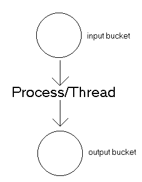
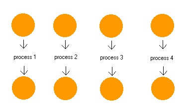
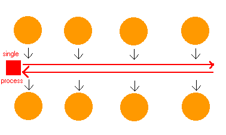

| |
 |
Asynchronous
(pronounced ay-SIHN-kro-nuhs, from Greek asyn-,
meaning "not with," and chronos, meaning "time")
In
computer programs, asynchronous operation means that a process operates
independently of other processes, whereas synchronous operation means that the
process runs only as a result of some other process being completed or handing
off operation. A typical activity that might use a synchronous protocol would be
a transmission of files from one point to another. As each transmission is
received, a response is returned indicating success or the need to resend. Each
successive transmission of data requires a response to the previous transmission
before a new one can be initiated.
What
is 'asynchronous socket programming'?
a.k.a.
event-driven programming or select()-based multiplexing, it's a
solution to a network programming problem: How do I talk to bunch of different
network connections at once, all within one process/thread?
Let's
say you're writing a database server that accepts requests via a tcp connection.
If you expect to have many simultaneous requests coming in, you might look at
the following options:
-
synchronous:
you handle one request at a time, each in turn.
pros: simple
cons: any one request can hold up all the other requests
-
fork:
you start a new process to handle each request.
pros: easy
cons: does not scale well, hundreds of connections means hundreds of
processes.
fork() is the Unix programmer's hammer. Because it's available,
every problem looks like a nail. It's usually overkill
-
threads:
start a new thread to handle each request.
pros: easy, and kinder to the kernel than using fork, since threads
usually have much less overhead
cons: your machine may not have threads, and threaded programming can
get very complicated very fast, with worries about controlling access to
shared resources.
With
async, or 'event-driven' programming, you cooperatively schedule the cpu or
other resources you wish to apply to each connection. How you do this really
depends on the application - and it's not always possible or reasonable to try.
But if you can capture the state of any one connection, and divide the work it
will do into relatively small pieces, then this solution might work for you. If
your connections do not require much (or any) state, then this is an ideal
approach.
pros:
-
efficient
and elegant
-
scales
well - hundreds of connections means only hundreds of socket/state objects,
not hundreds of threads or processes.
-
requires
no interlocking for access to shared resources. If your database provides no
interlocking of its own (as is the case for dbm, dbz, and berkeley db), than
the need to serialize access to the database is provided trivially.
-
integrates
easily with event-driven window-system programming. GUI programs that use
blocking network calls are not very graceful.
cons:
How
does it work?
Here's
a good visual metaphor to help describe the advantages of multiplexed
asynchronous I/O. Picture your program as a person, with a bucket in front of
him, and a bucket behind him. The bucket in front of him fills with water, and
his job is to wait until the bucket is full, and empty it into the bucket behind
him. [which might have yet another person behind it...] The bucket fills
sporadically, sometimes very quickly, and sometimes at just a trickle, but in
general your program sits there doing nothing most of the time.

Now
what if your program needs to talk to more than one connection (or file) at a
time? Forking another process is the equivalent of bringing in another person to
handle each pair of buckets. The typical server is written in just this style! A
server may be handling 20 simultaneous clients, and in our metaphor that means a
line of 20 people, sitting idle for 99% of the time, each waiting for his bucket
to fill!

The
obvious solution to this is to have a single person walk up and down the aisle
of bucket pairs. When he comes to a bucket that's full, he dumps it into the
other side, and then moves on. By walking up and down the aisle of buckets, one
busy person does the job of 20 idle people.

The
only time when this technique doesn't work well is when something other than
just dumping one bucket into the next needs to be done - say, turning the water
into gold first. If turning a bucket of water into a bucket of gold takes a long
time, then the other buckets may not get processed in a timely fashion. For
example, if your server program needs to crunch on the data it receives before
responding.
Writing
a single-process multiplexing socket program
Now
how do we apply our bucket wisdom to network programming?
Depending
on the operating system, there are several different ways to achieve our 'bucket-trickling'
affect. By far the most common, and simplest mechanism uses the select()
system call. The select() function takes (in effect) four
arguments: three 'lists' of sockets, and a timeout. The three socket lists
indicate interest in read, write, and exception events for
each socket listed. The function will return whenever the indicated socket fires
one of these events. If nothing happens within the timeout period, the function
simply returns.
The
result of the select() function is three lists telling you which
sockets fired which events.
Your
application will have a handler for each expected event type. This handler will
perform different tasks depending on your application. If a connection has a
need to keep state information, you'll probably end up writing a state machine
to handle transitions between different behaviors. Diving back into the bucket [paradigm],
these events might be the equivalent of adding little "I'm full now"
mailbox-like flags to the buckets.
Sounds
like a lot of work.
Well,
lucky for you, there's a set of common code that makes writing these programs a
snap. In fact, all you need to do is pick from two connection styles, and plug
in your own event handlers. As an extra added bonus, the differences between
Windows and Unix socket multiplexing have been abstracted - using the async base
classes (asyncore.dispatcher and asynchat.async_chat)
- you can write asynchronous programs that will work on Unix, Windows, or the
Macintosh (in fact, it should work on any platform that correctly implements the
socket and select modules).
The
first class is the simpler one, 'asyncore.dispatcher'. This class
manages the association between a socket descriptor (which is how
the operating system refers to the socket) and your socket object. dispatcher
is really a container for a system-level socket, but it's been wrapped to look
as much like a socket as possible. The main difference is that creating the
underlying socket operation is done by calling the create_socket
method.
Each
producer must have a more() method, which is called whenever more
output is needed. Note how the data is deliberately sent in fixed-size chunks:
If you create a simple_producer with a 15-Megabyte long string (ghastly!),
this will keep that one socket from monopolizing the whole program. When the
producer is exhausted, it returns an empty string, like a file object signifying
an end-of-file condition.
A
producer can compute its output 'on-the-fly', if so desired. It can keep state
information, too, like a file pointer, a database index, or a partial
computation.
Each
producer is filed into a queue (fifo), which is progressively emptied. The more
method of the front-most element of the queue is called until it is exhausted,
and then the producer is popped off the queue.
The
combination of delimiting the input and scheduling the output with a fifo allows
you to design a server that will correctly handle an impatient client. For
example, some NNTP clients send a barrage of commands to the server, and then
count out the responses as they are made (rather than sending a command, waiting
for a response, etc...). If a call to recv() reveals a buffer full
of these impatient commands, async_chat will handle the situation correctly,
calling collect_incoming_data and found_terminator in
sequence for each command.
|